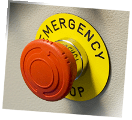

Kill Switches/Panic Buttons
Kill switches or panic buttons are usually installed inside rooms where antennas are located and are used to alert operators, open the exit door, and shut down power to the system if an individual is accidentally locked inside the room. This type of control should not be used as a first line of defense against exposure. Instead, it should be used in conjunction with other control measures.